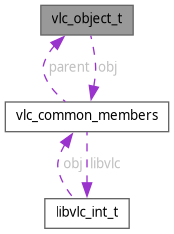

vlc_object_t Struct Reference
The main vlc_object_t structure. More...
#include <vlc_objects.h>
Collaboration diagram for vlc_object_t:

Data Fields | |
| struct vlc_common_members | obj |
Detailed Description
The main vlc_object_t structure.
Field Documentation
◆ obj
| struct vlc_common_members vlc_object_t::obj |
Referenced by config_AddIntf(), config_ExistIntf(), config_RemoveIntf(), get_dialog_provider(), get_memory_keystore(), PrintObject(), spuregion_CreateFromPicture(), update_New(), var_Inherit(), vlc_actions_get_key_names(), vlc_custom_create(), vlc_module_load(), vlc_mta_acquire(), vlc_mta_release(), vlc_object_destroy(), vlc_object_release(), vlc_vaLog(), and vlm_New().
The documentation for this struct was generated from the following file:
- include/vlc_objects.h
Generated by